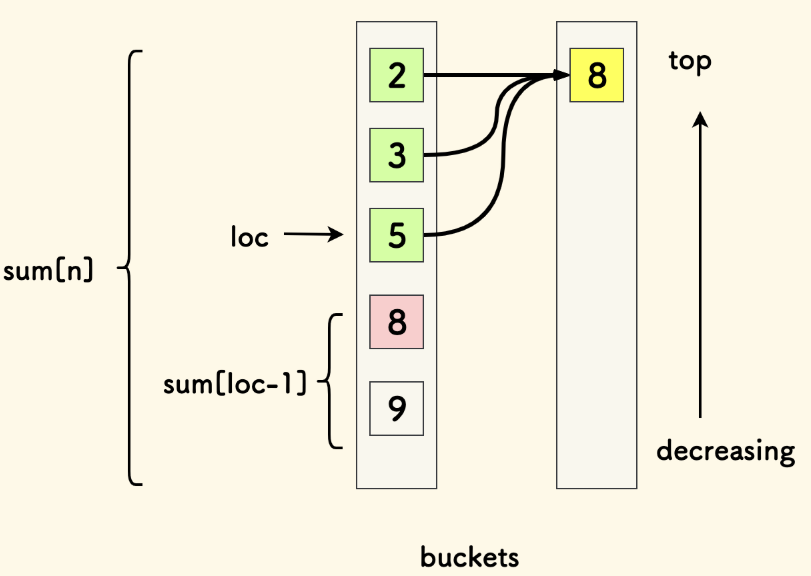
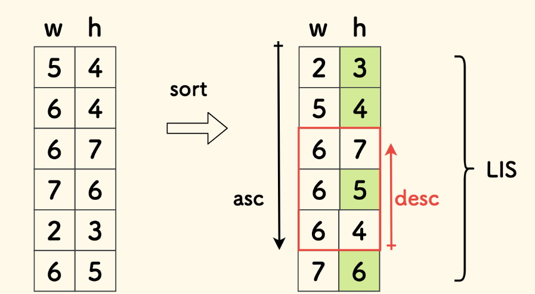

LeetCode 算法笔记
服务于机考
常用工具包
二分查找
注：在以下算法中，if 递归条件中改为非严格符号，就能处理有相同元素时的问题
查找给定值，存在则返回索引，否则返回-1：
# 迭代版本
def binary_search(nums, target):
left, right = 0, len(nums) - 1
while left <= right:
mid = (left + right) // 2
if nums[mid] == target:
return mid
elif nums[mid] < target:
left = mid + 1
else:
right = mid - 1
return -1
# 递归版本
def binary_search(nums, target, left, right):
if left > right:
return -1
mid = (left + right) // 2
if nums[mid] == target:
return mid
elif nums[mid] < target:
return binary_search(nums, target, mid + 1, right)
else:
return binary_search(nums, target, left, mid - 1)// 迭代版本
int binarySearch(vector& nums, int target) {
int left = 0, right = nums.size() - 1;
while (left <= right) {
int mid = left + (right - left) / 2;
if (nums[mid] == target) {
return mid;
} else if (nums[mid] < target) {
left = mid + 1;
} else {
right = mid - 1;
}
}
return -1;
}
// 递归版本
int binarySearch(vector& nums, int target, int left, int right) {
if (left > right) {
return -1;
}
int mid = left + (right - left) / 2;
if (nums[mid] == target) {
return mid;
} else if (nums[mid] < target) {
return binarySearch(nums, target, mid + 1, right);
} else {
return binarySearch(nums, target, left, mid - 1);
}
}查找比给定值小的最大元素（下界）:
# 迭代版本
def find_lower_bound(nums, target):
left, right = 0, len(nums) - 1
i = len(nums) # 初始化假设所有元素都小于target
while left <= right:
mid = (left + right) // 2
if nums[mid] >= target:
i = mid
right = mid - 1
else:
left = mid + 1
return i - 1 if i != 0 else -1
# 递归版本
def find_lower_bound(nums, target, left, right):
if left > right:
return right # 返回比target小的最大元素的索引
mid = (left + right) // 2
if nums[mid] >= target:
return find_lower_bound(nums, target, left, mid - 1)
else:
return find_lower_bound(nums, target, mid + 1, right)// 迭代版本
int findLowerBound(vector& nums, int target) {
int left = 0, right = nums.size() - 1;
int i = nums.size(); // 初始化假设所有元素都小于target
while (left <= right) {
int mid = left + (right - left) / 2;
if (nums[mid] >= target) {
i = mid;
right = mid - 1;
} else {
left = mid + 1;
}
}
return i == 0 ? -1 : i - 1;
}
// 递归版本
int findLowerBound(vector& nums, int target, int left, int right) {
if (left > right) {
return right; // 返回比target小的最大元素的索引
}
int mid = left + (right - left) / 2;
if (nums[mid] >= target) {
return findLowerBound(nums, target, left, mid - 1);
} else {
return findLowerBound(nums, target, mid + 1, right);
}
}查找比给定值大的最小元素（上界）:
# 迭代版本
def find_upper_bound(nums, target):
left, right = 0, len(nums) - 1
i = len(nums) # 初始化假设所有元素都小于等于target
while left <= right:
mid = (left + right) // 2
if nums[mid] > target:
i = mid
right = mid - 1
else:
left = mid + 1
return i if i != len(nums) else -1
# 递归版本
def find_upper_bound(nums, target, left, right):
if left > right:
return left if left < len(nums) else -1 # 返回比target大的最小元素的索引
mid = (left + right) // 2
if nums[mid] > target:
return find_upper_bound(nums, target, left, mid - 1)
else:
return find_upper_bound(nums, target, mid + 1, right)// 迭代版本
int findUpperBound(vector& nums, int target) {
int left = 0, right = nums.size() - 1;
int i = nums.size(); // 初始化假设所有元素都小于等于target
while (left <= right) {
int mid = left + (right - left) / 2;
if (nums[mid] > target) {
i = mid;
right = mid - 1;
} else {
left = mid + 1;
}
}
return i != nums.size() ? i : -1;
}
// 递归版本
int findUpperBound(vector& nums, int target, int left, int right) {
if (left > right) {
return left < nums.size() ? left : -1; // 返回比target大的最小元素的索引
}
int mid = left + (right - left) / 2;
if (nums[mid] > target) {
return findUpperBound(nums, target, left, mid - 1);
} else {
return findUpperBound(nums, target, mid + 1, right);
}
}链表快慢指针
取链表中点
while fast and fast.next:
fast, slow = fast.next.next, slow.next
mid = slow.nextwhile (fast != nullptr && fast->next != nullptr) {
fast = fast->next->next;
slow = slow->next;
}
ListNode* mid = slow->next;找环形入口
# 此部分代码待实现// 此部分代码待实现滑动窗口
滑动窗口仅适用于单调数组，即右扩展
单调栈
在 $O(n)$ 内解决 “ 左 / 右边下一个更大 / 更小元素 ” 问题（广义：在一维数组中找第一个满足某种条件的数）：
- 单调递增栈：从栈顶到栈底递增（口诀：递增栈找第一大）
- 满足递增：入栈时判断栈顶是否比自己小，如果是则弹出；直到栈空或栈顶不小于自身，入栈
- 当从左到右顺序遍历入栈时，入栈前的元素就是左边第一个比自己大的元素
- 单调递减栈：从栈顶到栈底递减（口诀：递减栈找第一小）
- 入栈时判断栈顶是否比自己大
- 如果是则弹出，直到栈顶不大于自身，入栈
- 当从左到右顺序遍历入栈时，入栈前的元素就是左边第一个比自己小的元素
单调栈是非常好用的数据结构，为了避免脑子卡住：
-
先记住口诀：减小增大（顺着的）
-
再记模板：单调栈三部曲
# 此部分代码待实现while 栈非空 and 单调性不满足（这里是排除，排除不严格结果就严格）:
出栈
if 栈空: 边界处理
esle: r[i]=栈顶
无条件入栈 a[i]- 然后理解：单调栈的精髓在于单向遮盖：对于从左向右遍历的递减栈来说，当它遇到一个值，栈中所有比它大的值都会被踢出，这个值就相当于遮盖了它左边所有比它大的值，标记出了新的左侧下界，但又保留了比自己更小的值
（一般在实际应用中维护的是索引，结果序列的初试默认值为 -1，最终值为 -1 则代表没有，也就是单向极值）：
def next_greater(nums):
greater_stack = []
answer = [-1]*len(nums) # 初始化全 -1
for i in range(len(nums)):
while greater_stack and nums[i]>nums[greater_stack[-1]]: # 栈底在末位
index = greater_stack.pop()
answer[index] = nums[i]
greater_stack.append(i)
return answervector nextGreater(vector& nums) {
stack greaterStack;
vector answer(nums.size(), -1); // 初始化全 -1
for (int i = 0; i < nums.size(); i++) {
while (!greaterStack.empty() && nums[i] > nums[greaterStack.top()]) { // 栈底在末位
int index = greaterStack.top();
greaterStack.pop();
answer[index] = nums[i];
}
greaterStack.push(i);
}
return answer;
}:star:42. 接雨水 - 力扣（LeetCode）
思路：按列求，每次只关注一列（而不是块区域，这个聚焦思想很重要），一个列能够接雨水的量：取决于：min(左边的最高值，右边的最高值）-当前列高，于是我们只需要获得：
- 向左看的最高列数组
l - 向右看的最高列数组
r - 本列的高度输入（输入）
a
就可以得到答案数组res[i]=min(l[i],r[i])-a[i]，对 res 的所有非 0 项求和即可
def trap(height):
n = len(height)
h = 0
l, r, res = [0] * n, [0] * n, [0] * n
for i in range(n):
l[i] = h
if height[i] > h:
h = height[i]
h = 0
for i in range(n-1, -1, -1):
r[i] = h
if height[i] > h:
h = height[i]
ans = 0
for i in range(n):
res[i] = min(l[i], r[i]) - height[i]
if res[i] > 0:
ans += res[i]
return ansint trap(vector<int>& height) {
int n = height.size();
int h = 0;
vector<int> l(n), r(n), res(n);
for(int i=0;i<n;i++){
l[i] = h;
if(height[i]>h) h = height[i];
}
h = 0;
for(int i=n-1;i>=0;i--){
r[i] = h;
if(height[i]>h) h = height[i];
}
int ans = 0;
for(int i=0;i<n;i++){
res[i]=min(l[i], r[i]) - height[i];
if(res[i]>0) ans+=res[i];
}
return ans;
}经典单调栈题目
def largestRectangleArea(self, heights):
# 对于i列，矩形大小为：左边最远不小于自己的，右边最远不小于自己的
n = len(heights)
if n == 0:
return heights[0]
s = []
left, right = [0] * n, [0] * n
# 从左往右，找左边严格小,严格单调递减栈
for i in range(n):
while s and heights[s[-1]] >= heights[i]:
s.pop()
left[i] = -1 if not s else s[-1]
s.append(i)
s = []
# 从右往左，找右边严格小,严格单调递减栈
for i in range(n-1, -1, -1):
while s and heights[s[-1]] >= heights[i]:
s.pop()
right[i] = n if not s else s[-1]
s.append(i)
# 计算答案
maxa = 0
for i in range(n):
maxa = max(maxa, heights[i] * (right[i] - left[i] - 1))
return maxaint largestRectangleArea(vector<int>& heights) {
// 对于i列，矩形大小为：左边最远不小于自己的，右边最远不小于自己的
int n = heights.size();
if(n==0) return heights[0];
stack<int> s;
vector<int> left(n), right(n);
// 从左往右，找左边严格小,严格单调递减栈
for(int i=0;i<n;i++){
while(!s.empty() && heights[s.top()]>=heights[i]) s.pop();
if(s.empty()) left[i] = -1;
else left[i] = s.top();
s.push(i);
}
while(!s.empty()) s.pop();
// 从右往左，找右边严格小,严格单调递减栈
for(int i=n-1;i>=0;i--){
while(!s.empty() && heights[s.top()]>=heights[i]) s.pop();
if(s.empty()) right[i] = n;
else right[i] = s.top();
s.push(i);
}
// 计算答案
int maxa = 0;
for(int i=0;i<n;i++){
maxa = max(maxa, heights[i]*(right[i]-left[i]-1));
}
return maxa;
}单调栈经典例题，提醒一下：单调栈经常存储的是下标，而属性信息则使用下标查表
# 此部分代码待实现vector<int> dailyTemperatures(vector<int>& temperatures) {
int n = temperatures.size();
vector<int> ans(n, 0);
stack<int> s; // 只存储索引，不需要结构体
for (int i = n - 1; i >= 0; i--) {
while (!s.empty() && temperatures[i] >= temperatures[s.top()]) s.pop();
if (!s.empty()) ans[i] = s.top() - i;
s.push(i);
}
return ans;
}四道同思路的拓展题：
单调队列
前缀和
动态规划
DP 问题分类大观
| 问题特征 | 可能类型 |
|---|---|
| 涉及数组/字符串的单个序列操作，状态与序列位置直接相关（仅依赖序列前驱） | 线性DP |
| 涉及两个序列的匹配或比较 | 双序列DP |
| 选择物品且有容量限制，状态定义中包含容量维度 | 背包问题 |
| 操作对象是区间或子序列（需枚举分割点） | 区间DP |
| 问题在树形结构上操作 | 树形DP |
| 存在多个互斥状态，状态间有明确的转移规则。 | 状态机DP |
线性 DP
核心特点：状态与序列位置直接相关
经典问题：最长递增子序列（LIS）、最大子数组和
🎯 状态定义套路：dp[i]：以第 i 个元素结尾的某种最优解
连续子数组问题
🎯 状态定义：dp[i]：以第 i 个元素结尾的子数组问题
状态转移：dp[i]=f(nums[i], g(dp[i-1],nums[i]))：要么追加，要么单开，其中 f 是状态选择函数，g 是状态计算函数
空间优化：如果只关注前驱，只保留 pre 即可
问题：找出一个具有最大和的连续非空子数组
- 问题分析：
- 连续 -> 连续子数组问题（要么追加，要么单开）
- 最大和 -> 状态转移
f:max，g:+ - 状态定义：
dp[i]：以第 i 个元素结尾的最大子数组和 - 状态转移方程：
dp[i] = max(nums[i],dp[i-1]+nums[i]); - 最终目标：
max(dp) - 边界条件与限制：
dp[0] = nums[0]
def maxSubArray(self, nums: List[int]) -> int:
dp = [0]*len(nums)
dp[0] = nums[0];
for i in range(1, len(nums)):
dp[i] = max(nums[i],dp[i-1]+nums[i])
return max(dp)int maxSubArray(vector<int>& nums) {
vector<int> dp(nums.size());
dp[0] = nums[0];
int maxn = dp[0];
for(int i=1;i<nums.size();i++){
dp[i] = max(nums[i],dp[i-1]+nums[i]);
if(maxn<dp[i]) maxn=dp[i];
}
return maxn;
}- 空间优化：只关注直接前驱，考虑使用前驱变量或者直接原地修改
def maxSubArray(self, nums: List[int]) -> int:
for i in range(1, len(nums)):
nums[i] += max(nums[i - 1], 0)
return max(nums)int maxSubArray(vector<int>& nums) {
int maxn = nums[0];
for(int i=1;i<nums.size();i++){
nums[i] += max(nums[i-1],0);
if(maxn<nums[i]) maxn=nums[i];
}
return maxn;
}问题：找出一个具有最大乘积的连续非空子数组
- 问题分析：
- 连续 -> 连续子数组问题（要么追加，要么单开）
- 最大乘积 -> 状态转移
f:max，g:* - 问题特性：对于乘法，负数会逆转结果，所以只维护最大值是不行的，还要考虑负半轴的最小值
- 状态定义：
dp[i]：以第 i 个元素结尾的最大子数组乘积 - 状态转移方程：单开显然不用讨论，讨论追加情况，各自再加上当前数比较
- 当前元素为正数：
- 最大乘积（
dp[i]）可能是前一个最大乘积乘以当前数 - 最小乘积（
mindp[i]）可能是前一个最小乘积乘以当前数
- 最大乘积（
- 当前元素为负数：
- 最大乘积（
dp[i]）可能由前一个最小乘积（负数）乘以当前数（负负得正）得到 - 最小乘积（
mindp[i]）可能由前一个最大乘积（正数）乘以当前数得到
- 最大乘积（
- 最终目标：
max(dp) - 边界条件与限制：
dp[0] = nums[0]
def maxProduct(self, nums: List[int]) -> int:
dp = [nums[0]] * len(nums)
mindp = [nums[0]] * len(nums)
for i in range(1,len(nums)):
if nums[i] > 0: # 正数
mindp[i] = min(mindp[i-1]*nums[i], nums[i])
dp[i] = max(dp[i-1]*nums[i], nums[i])
else: # 负数
mindp[i] = min(dp[i-1]*nums[i], nums[i])
dp[i] = max(mindp[i-1]*nums[i], nums[i])
return max(dp)int maxProduct(vector<int>& nums) {
int n = nums.size();
vector<int> dp(n, 0), neg(n,0);
dp[0] = nums[0], mindp[0]=nums[0];
int res = dp[0];
for(int i=1;i<n;i++){
if(nums[i]>0){
neg[i] = min(mindp[i-1]*nums[i], nums[i]); // 默认neg是负数
dp[i] = max(dp[i-1]*nums[i], nums[i]);
}
else{
neg[i] = min(dp[i-1]*nums[i], nums[i]); // 默认dp是负数
dp[i] = max(mindp[i-1]*nums[i], nums[i]);
}
if(res<dp[i]) res = dp[i];
}
return res;
}- 空间优化
def maxProduct(self, nums: List[int]) -> int:
dp = nums
maxdp = dp[0]
mindp = dp[0]
for i in range(1,len(nums)):
tempmaxdp = max(nums[i], maxdp*nums[i], mindp*nums[i])
tempmindp = min(nums[i], mindp*nums[i], maxdp*nums[i])
maxdp = tempmaxdp
mindp = tempmindp
dp[i] = max(dp[i-1], maxdp)
return dp[-1]// 此部分代码待实现
# 此部分代码待实现// 此部分代码待实现最长递增子序列问题 LIS
最基础的暴力 DP：
def lengthOfLIS(nums):
dp = [1] * len(nums) # dp[i]：以nums[i]结尾的最长递增子序列长度
for i in range(len(nums)):
for j in range(i):
if nums[j] < nums[i]:
dp[i] = max(dp[i], dp[j] + 1)
return max(dp)// 此部分代码待实现基础模型：二分法求 LIS 长度：
维护 p 数组：p[i]：长度为 i+1 的递增子序列的最末尾元素中的最小值（最小值的用意直观上是为了找上升得最慢的子序列），且显然 p 是递增的
- 遍历主数组，若当前
t[i]元素大于p[-1]，则把该元素追加到p后：p.append(t[i]) - 若当前
t[i]元素小于p[-1]，说明找到了更慢的上升子序列，则更新p，覆盖掉p中大于t[i]的最小元素（二分查找） - 最终返回
p的长度
万能建模：DAG 模型，可用于 LIS 进阶问题

建模思路：
- 数据结构：二维数组，每一层用一个列表，每个列表内部是有序的
- 构建过程：对于每个元素
s[i]，由于每个层的最小元素都在顶部，所以可以只看顶部就知道自己能不能和前面的层构成递增关系，即插入到下界后的有序表中 - 层间联系：图上的边实际上并不需要真的存储，因为边描述的是递增关系，递增关系可以在需要的时候通过遍历查询
用法：
求最长递增子序列的个数
思路：子序列个数 = 到达子序列末节点的路径个数，每次插入新元素，都需要检查前一层队列中，是自己前驱的个数和，元素构造为：val, num

673. 最长递增子序列的个数 - 力扣（LeetCode）
俄罗斯套娃信封问题
LIS 问题的二维延伸，特点在于，你可以按照其中一个特征排序，另一个特征就会无序，随后在无序的特征维上做 LIS

排序中有个细节，却是点睛之笔，如果两个信封宽度相等，要按高度逆序排序 。 无论宽高，当严格大于时，才可以认为装的下。在宽相等的多个信封中，LIS 求解时只能取一个。 此时的局部逆序，则保证了 LIS 序列中最多从中取一个
更多的，还有三维衍生问题：
逆序问题
核心特点：状态转移方向与常规顺序相反，通常是因为当前状态的计算需要依赖后面的状态（反过来说，就是当前的决定是根据其对后续造成的影响来判断的）
🎯 状态定义套路：dp[i]：以第 i 个元素开始的某种最优解
问题： 按顺序解决问题，针对每个问题选择 解决 或者 跳过 操作，每个问题有分数和屏蔽值，会屏蔽后续的 k 个问题
- 问题分析：模拟解答过程，发现是否解答这个问题取决于其屏蔽的问题价值和自身哪个大，即关注后续，倒序 DP
- 状态定义：
dp[i]表示从第i个问题开始的最优解 - 状态转移方程：
- 跳过：
dp[i]=dp[i+1] - 不跳过，其后续 k 个问题会被屏蔽，故看
dp[i+k+1]：dp[i] = dp[i+k+1]+p[i] -
最后目标是求
max -
最终目标：
dp0] - 边界条件与限制：跳过头的问题都需要额外处理，使用末尾的零哨兵算法会更会简洁
def mostPoints(self, questions: List[List[int]]) -> int:
n = len(questions)
dp=[0]*(n+1) # 最后一个作为0哨兵
for i in range(n-1,-1,-1):
dp[i] = max(dp[i+1],questions[i][0]+dp[min(n,i+questions[i][1]+1)])
return dp[0]long long mostPoints(vector<vector<int>>& questions) {
int n = questions.size();
vector<long long> dp(n+1, 0); // 最后一个作为0哨兵
for(int i=n-1;i>=0;i--){
dp[i]=max(dp[i+1], dp[min(n, i + questions[i][1] + 1)]+questions[i][0]);
}
return dp[0];
}问题：只 向右 或 向下 移动一步，点数不能降至 0 或以下，从左上角走到右下角
- 问题分析：目标状态是固定的，且从左上角开始和从任意点开始没有本质区别（子问题结构），我们尝试模拟问题求解，发现当前格中需要有的血量是从终点开始向前推导的（逆序 DP）
- 状态定义：
dp[i][j]表示前从[i,j]出发到终点所需要的最少血量 - 状态转移方程：无论格子中的点数的正负，顺着走永远都是求
+，反过来就是求- - 如果求
-后大于 0：说明骑士按最低标准不会死亡，可行 -
否则：说明骑士按最低标准无法存活，则至少为 1
-
最终目标：
dp[0][0] - 边界条件与限制：终点要是 1，两边单向处理
def calculateMinimumHP(self, dungeon: List[List[int]]) -> int:
n = len(dungeon)
m = len(dungeon[0])
dp = [[0]*m for _ in range(n)]
dp[n-1][m-1] = 1-dungeon[n-1][m-1] if dungeon[n-1][m-1]<=0 else 1
for i in range(n-2,-1,-1):
dp[i][m-1] = max(dp[i+1][m-1]-dungeon[i][m-1], 1)
for j in range(m-2,-1,-1):
dp[n-1][j] = max(dp[n-1][j+1]-dungeon[n-1][j], 1)
for i in range(n-2,-1,-1):
for j in range(m-2,-1,-1):
dp[i][j] = min(max(dp[i+1][j]-dungeon[i][j], 1),
max(dp[i][j+1]-dungeon[i][j], 1))
return dp[0][0]int calculateMinimumHP(vector<vector<int>>& dungeon) {
int n = dungeon.size(), m = dungeon[0].size();
vector<vector<int>> dp(n, vector<int>(m,0));
dp[n-1][m-1] = dungeon[n-1][m-1]<=0? 1-dungeon[n-1][m-1]:1;
for(int i=n-2;i>=0;i--)
dp[i][m-1] = max(dp[i+1][m-1]-dungeon[i][m-1], 1);
for(int j=m-2;j>=0;j--)
dp[n-1][j] = max(dp[n-1][j+1]-dungeon[n-1][j], 1);
for(int i=n-2;i>=0;i--){
for(int j=m-2;j>=0;j--){
dp[i][j] = min(max(dp[i+1][j]-dungeon[i][j], 1),
max(dp[i][j+1]-dungeon[i][j], 1));
}
}
return dp[0][0];
}双序列问题
核心特点：
- 操作对象是两个序列（如字符串、数组）
- 通常涉及匹配、对比、转换操作（如最长公共子序列、编辑距离）
经典问题：最长公共子序列、编辑距离
🎯 状态定义套路：
dp[i][j]：表示处理到第一个序列的第 i 个元素和第二个序列的第 j 个元素时的最优解
常用技巧：双序列表格法＋字符串填充前导 0 或前导空字符，便于边界处理
问题：给你两个单词 word1 和 word2， 请返回将 word1 转换成 word2 所使用的最少操作数（插入，删除，替换）

def minDistance(self, word1: str, word2: str) -> int:
if word2=="": return len(word1)
if word1=="": return len(word2)
dp = [[0 for j in range(len(word2)+1)] for i in range(len(word1)+1)]
# 边界
for i in range(1,len(word1)+1): dp[i][0] = dp[i-1][0]+1
for j in range(1,len(word2)+1): dp[0][j] = dp[0][j-1]+1
for i in range(1,len(word1)+1):
for j in range(1,len(word2)+1):
if word1[i-1]==word2[j-1]: dp[i][j]=dp[i-1][j-1]
else: dp[i][j]=min(dp[i-1][j],dp[i][j-1],dp[i-1][j-1])+1
return dp[-1][-1]int minDistance(string word1, string word2) {
int n = word1.size(), m = word2.size();
if(n==0 || m==0) return max(n,m);
vector<vector<int>> dp(n+1,vector<int>(m+1,0));
// dp[i][j] = dp[i-1][j-1], w[i]==w[j], 不编辑
// dp[i][j] = min(dp[i-1][j],dp[i][j-1])+1 编辑
// 边界
for(int i=0;i<n+1;i++) dp[i][0] = i;
for(int j=0;j<m+1;j++) dp[0][j] = j;
for(int i=1;i<n+1;i++){
for(int j=1;j<m+1;j++){
if(word1[i-1]==word2[j-1]) dp[i][j] = dp[i-1][j-1];
else dp[i][j] = min(min(dp[i-1][j],dp[i][j-1]),dp[i-1][j-1])+1;
}
}
return dp[n][m];
}
二维线性问题
核心特点：
- 问题场景在二维网格中（如矩阵、棋盘）
- 移动方向受限（通常只能向右/向下）
状态定义套路：
dp[i][j]: 表示到达网格位置(i,j)时的最优解（如路径数、最小代价）
区间DP：子区间最优解
核心特点：操作对象是区间，最外层循环是子区间长度，下一层循环是子区间起点
经典问题：矩阵连乘、回文子串、戳气球
🎯 状态定义套路：dp[i][j]：区间 [i,j] 上的最优解
🎯 状态转移套路：dp[i,j] = max/min{dp[i,j], dp[i, k] + dp[k+1, j] + cost}
回文串类型
# 此部分代码待实现string longestPalindrome(string s) {
// dp[i][j]: s[i..j] 是回文串
// dp[i][j] = dp[i+1][j-1], s[i]==s[j]
int n = s.size();
vector<vector<bool>> dp(n, vector<bool>(n, false));
int resi=0, reslen=1;
for(int i=0;i<n;i++) dp[i][i]=true;
for(int len=2;len<=n;len++){
for(int i=0;i<=n-len;i++){
int j = i+len-1;
if(s[i]==s[j]){
if(i==j-1) dp[i][j]=true; //len=2的情况
else dp[i][j] = dp[i+1][j-1];
}
if(dp[i][j] && j-i+1>reslen){
reslen = j-i+1;
resi = i;
}
}
}
return s.substr(resi, reslen);
}
# 此部分代码待实现int longestPalindromeSubseq(string s) {
int n = s.size();
vector<vector<int>> dp(n,vector<int>(n,0));
for(int i=0;i<n;i++) dp[i][i]=1;
for(int len=2;len<=n;len++){
for(int i=0;i<=n-len;i++){
int j = i+len-1;
if(s[i]==s[j]) dp[i][j]=dp[i+1][j-1]+2;
else dp[i][j]=max(dp[i][j-1],dp[i+1][j]);
}
}
return dp[0][n-1];
}1312. 让字符串成为回文串的最少插入次数 - 力扣（LeetCode）
# 此部分代码待实现int minInsertions(string s) {
int n = s.size();
vector<vector<int>> dp(n,vector<int>(n,0));
for(int len=2;len<=n;len++){
for(int i=0;i<=n-len;i++){
int j = i+len-1;
if(s[i]==s[j]) dp[i][j]=dp[i+1][j-1];
else dp[i][j]=min(dp[i][j-1],dp[i+1][j])+1;
}
}
return dp[0][n-1];
}分割点类型
passint maxCoins(vector<int>& nums) {
// 我也不知道为什么是区间dp
// dp[i][j]: 考虑开子区间的最优解
// dp[i][k]: k 是最后一个戳爆的气球
nums.insert(nums.begin(),1);
nums.push_back(1);
int n = nums.size();
vector<vector<int>> dp(n+1, vector<int>(n+1, 0));
for(int len=2;len<n;len++) // 区间dp特点：最外层是区间长度
for(int i=0;i<n-len;i++)
for(int k=i+1;k<i+len;k++)
dp[i][i+len] = max(dp[i][i+len], dp[i][k]+nums[i]*nums[k]*nums[i+len]+dp[k][i+len]);
return dp[0][n-1];
}1000. 合并石头的最低成本 - 力扣（LeetCode）
# 此部分代码待实现int mergeStones(vector<int>& stones, int k) {
// 区间dp
int n = stones.size();
if((n-1)%(k-1)!=0) return -1;
vector<int> prefix(n+1,0);// 计算前缀和，便于计算代价
for(int i=0;i<n;i++) prefix[i + 1] = prefix[i] + stones[i];
vector<vector<int>> dp(n, vector<int>(n,99999));
for(int i=0;i<n;i++) dp[i][i] = 0;
for(int len=2;len<=n;len++){
for(int i=0;i<=n-len;i++){
int j = i+len-1;
for(int p=i;p<j;p+=k-1) // 尝试所有可能的分割点
dp[i][j] = min(dp[i][j], dp[i][p] + dp[p+1][j]);
// 如果当前区间长度满足可以合并成一堆的条件，加上合并的成本
if ((j - i) % (k - 1) == 0)
dp[i][j] += prefix[j + 1] - prefix[i];
}
}
return dp[0][n-1];
}背包问题：选择与容量
核心特点：物品选择 + 容量限制（在有约束的情况下，对某个元素要么拿要么不拿）
经典问题：01背包、完全背包、分割等和子集
🎯 状态定义套路：dp[i][w]：前 i 个物品，容量为 w 时的最优解（实际定义数组需要以 n+1 和 w+1 为尺寸）
🎯 状态转移套路：背包问题特点：最外层循环是背包容量，下一层循环是物品
空间优化：
- 常用一维数组
dp[w]：发现dp[i][w]的计算仅依赖上一行dp[i-1][...]的值，因此可以用一维数组滚动更新，覆盖旧状态。（01背包覆盖通常需要从右向左更新，反向遍历；而完全背包正向遍历） - 优化前，
i的遍历范围是[1,n]，dp数组的尺寸是[n+1][p+1]；优化后i的遍历范围是[0,n-1]，dp数组的尺寸是[p+1] - 优化前，需要判断背包余量和物品重量的关系（二维表格全遍历，存在物品重量大于余量的情况，需要复制之前的结果）；而优化后不需要（只遍历物品重量到余量，自动跳过无法取的情况，之前的结果只是不被覆盖，不需要显式复制），实际上空间优化的同时也优化了时间开销（复杂度相同）
0-1 背包
核心特点：有 n 种物品，每种物品只有一个，每个物品有自己的重量和价值
关键难点：难点在于问题转化，不会那么直白得提问，需要化归
🎯 状态转移套路：
- 拿不下就不拿：
if(j<w[i]) dp[i][j]=dp[i-1][j] - 拿得下再决定：
else dp[i][j]=g(dp[i-1][j], dp[i-1][j-w[i]]+v[i])，其中g是价值函数，用于衡量拿和不拿哪一个状态对目标有利，常见有：max，min，||，+ - 求值：
dp[i][j]=max(dp[i-1][j],dp[i-1][j-w[i]]+v[i])
问题：能否将数组分割成两个和相等的子集？
- 问题分析：寻找是否存在和为
sum/2的子集 - 状态定义：
dp[i][j]表示前i个数字中选出和为j的存在性。 - 状态转移方程：
- 拿不下就不拿：
if(j<nums[i-1]) dp[i][j]=dp[i-1][j]; -
拿得下再决定拿不拿：
else dp[i][j] = dp[i-1][j] || dp[i-1][j-nums[i-1]]; -
最终目标：
dp[n][p] - 边界条件与限制：
dp[0][0]=true和sum必须是偶数
# 此部分代码待实现bool canPartition(vector<int>& nums) {
int sum = 0, n=nums.size();
for(int i=0;i<n;i++) sum+=nums[i];
if(sum%2!=0) return false;
int p = sum/2;
vector<vector<int>> dp(n+1,vector<int>(p+1,false));
dp[0][0]=true;
for(int i=1;i<=n;i++){
for(int j=0;j<=p;j++){
if(j<nums[i-1]) dp[i][j]=dp[i-1][j];
else dp[i][j] = dp[i-1][j] || dp[i-1][j-nums[i-1]];
}
}
return dp[n][p];
}- 空间优化：
dp[i][j]仅依赖于dp[i-1][j]和dp[i-1][j-nums[i-1]]，即上一行的数据 dp[j]：容量为j时的可行性dp[j] = dp[j] || dp[j-nums[i]];
# 此部分代码待实现bool canPartition(vector<int>& nums) {
int sum = 0, n=nums.size();
for(int i=0;i<n;i++) sum+=nums[i];
if(sum%2!=0) return false;
sum/=2;
vector<int> dp(sum+1,false);
dp[0]=true;
for(int i=0;i<n;i++){
for(int j=sum;j>=nums[i];j--){
dp[j] = dp[j] || dp[j-nums[i]];
}
}
return dp[sum];
}问题：nums每个数字前添加 + 或 -，使得表达式的运算结果等于 target，求共有多少种组合方式
- 问题分析：设正数子集为 P，负数子集为 N；已知：
P-N=targetP+N=sum(nums)- 联立得：
P=(target+sum(nums))/2，将问题转化为：在数组中选取若干数，使得它们的和等于P（01 背包） - 状态定义：
dp[i][j]表示前i个数字中选出和为j的方案数。 - 状态转移方程：
- 当
j小于nums[i]时，不选择：dp[i][j] = dp[i-1][j] - 否则，合并是否选择的结果：
dp[i][j] = dp[i-1][j]+dp[i-1][j - nums[i]] - 最终目标：
dp[n][p] - 边界条件与限制：
- 必要条件：
target+sum(nums)必须是非负偶数，且sum(nums)>=target - 初始化：
dp[0][0]=1（空集合和为0的方案数为1）
# 此部分代码待实现int findTargetSumWays(vector<int>& nums, int target) {
int n = nums.size();
int p=0;
for(int i=0;i<n;i++) p+=nums[i];
if(p<target) return 0;
p += target;
if(p%2!=0 || p<0) return 0;
p/=2;
vector<vector<int>> dp(n+1, vector<int>(p+1,0));
dp[0][0]=1; // 空组和为0，相当于有一种方案
for(int i=1;i<=n;i++){
for(int j=0;j<=p;j++){
if(j<nums[i-1]) dp[i][j]=dp[i-1][j]; //没法选
else dp[i][j]=dp[i-1][j]+dp[i-1][j-nums[i-1]]; //不选这个数方案数+选这个数方案数
}
}
return dp[n][p];
}- 空间优化：
dp[i][j]仅依赖于dp[i-1][j]和dp[i-1][j-nums[i-1]]，即上一行的数据 dp[j]：容量为j时的方案数dp[j]=dp[j]+dp[j-nums[i]];
# 此部分代码待实现int findTargetSumWays(vector<int>& nums, int target) {
// `P=(target+sum(nums))/2`
// 将问题转化为：在数组中选取若干数，使得它们的和等于 `P`（01 背包）
int n = nums.size();
int p=0;
for(int i=0;i<n;i++) p+=nums[i];
if(p<target) return 0;
p += target;
if(p%2!=0 || p<0) return 0;
p/=2;
vector<int> dp(p+1,0);
dp[0]=1; // 空组和为0，相当于有一种方案
for(int i=0;i<n;i++){
for(int j=p;j>=nums[i];j--){
dp[j]=dp[j]+dp[j-nums[i]]; //不选这个数方案数+选这个数方案数
}
}
return dp[p];
}问题：给定一个二进制字符串数组 strs 和两个整数 m 和 n，分别表示允许使用的 0 和 1 的最大数量。要求找出并返回能组成的最大子集的大小，该子集中 0 和 1 的数量不超过 m 和 n。
（当你已经熟悉了 0-1 背包的空间优化，就应该直接把它作为入手点了，不需要再从普通情况入手，无非就三部曲：1.背包里面没有 i，2.容量倒序，3.下界为物品重量)
（注意，并不是所有背包问题都可以空间优化，当且仅当不存在多维约束（标准背包）且不用记录路径的问题可以）
- 问题分析：题目中给出了两个费用，这是二维 0-1 背包问题
- 状态定义：
dp[j][k]表示使用j个0和k个1时能组成的最大子集大小 - 状态转移：对于每个字符串，统计其
0的数量zeros和1的数量ones - 最终目标：
dp[m][n] - 边界条件与限制：
dp[0][0]=0
# 此部分代码待实现int findMaxForm(vector<string>& strs, int m, int n) {
vector<vector<int>> dp(m+1,vector<int>(n+1,0));
dp[0][0]=0;
for(int i=0;i<strs.size();i++){
int zero =0, one=0;
for(int j=0;j<strs[i].size();j++){
if(strs[i][j]=='0') zero++;
else one++;
}
for(int j=m;j>=zero;j--){
for(int k=n;k>=one;k--){
dp[j][k]=max(dp[j][k], dp[j-zero][k-one]+1);
}
}
}
return dp[m][n];
}完全背包
核心特点：有 n 种物品，每种物品可以重复使用，每个物品有自己的重量和价值
关键难点：难点在于问题转化，不会那么直白得提问，需要化归
🎯 状态转移套路：
- 拿不下就不拿：
if(j<w[i]) dp[i][j]=dp[i-1][j] - 拿得下再决定：
else dp[i][j]=g(dp[i-1][j], dp[i-1][j-w[i]]+v[i])，其中g是价值函数，用于衡量拿和不拿哪一个状态对目标有利，常见有：max，min，|| - 求值：
dp[i][j]=max(dp[i-1][j],dp[i-1][j-w[i]]+v[i]) - 空间优化：与 0-1 背包不同，因为完全背包允许重复选择，所以允许覆盖，可以正序更新
问题：假设有无限数量的硬币，面额为 coins，需要凑出总金额 amount。求最少需要多少枚硬币？
- 问题分析：经典的完全背包，“无限数量” 求 “最少”
- 状态定义：
dp[i][j]表示前i种硬币中凑出金额为w的最少硬币数。 - 状态转移方程：
- 当
j小于coins[i-1]时，不选择：dp[i][j] = dp[i-1][j] - 否则，比较决定是否选择：
dp[i][j] = min(dp[i-1][j],dp[i][j-coins[i-1]] + 1) - 最终目标：
dp[n][p] - 边界条件与限制：
- 初始化：
dp[0][0]=0，dp[0][j]=INT_MAX
# 此部分代码待实现int coinChange(vector<int>& coins, int amount) {
int n = coins.size();
vector<vector<int>> dp(n+1,vector<int>(amount+1,INT_MAX-1));
dp[0][0]=0;
for(int i=1;i<=n;i++){ //遍历物品
for(int j=0;j<amount+1;j++){ //遍历容量
if(j<coins[i-1]) dp[i][j]=dp[i-1][j];
else dp[i][j]=min(dp[i-1][j], dp[i][j-coins[i-1]]+1);
}
}
return dp[n][amount]==INT_MAX-1? -1 : dp[n][amount];
}- 空间优化：
dp[i][j]仅依赖于dp[i-1][j]和dp[i][j - coins[i-1]] dp[j]：凑出金额j所需的最少硬币数dp[j] = min(dp[j],dp[j - coins[i]]+1)，正序更新
# 此部分代码待实现int coinChange(vector<int>& coins, int amount) {
vector<int> dp(amount+1,INT_MAX-1);
dp[0]=0;
for(int i=0;i<coins.size();i++){ //遍历物品
for(int j=coins[i];j<amount+1;j++){ //遍历容量
dp[j]=min(dp[j], dp[j-coins[i]]+1);
}
}
return dp[amount]==INT_MAX-1? -1 : dp[amount];
}
# 此部分代码待实现bool wordBreak(string s, vector<string>& wordDict) {
// dp[i]:考虑前i个字母的结果
int n = s.size();
vector<bool> dp(n+1, false);
dp[0] = true;
for(int i=0;i<=n;i++){ // 遍历容量
for (const string& word : wordDict) { // 遍历物品
int len = word.size(); // 检查长度是否足够，且子串匹配
if (i >= len && dp[i - len] && s.substr(i - len, len) == word) {
dp[i] = true;
break; // 找到一个可行解即可跳过其他单词
}
}
}
return dp[n];
}
# 此部分代码待实现// 此部分代码待实现
# 此部分代码待实现int change(int amount, vector<int>& coins) {
int n = coins.size();
vector<double> dp(amount+1, 0);
dp[0] = 1;
for(int i=0;i<n;i++){
for(int j=coins[i];j<=amount;j++)
dp[j]=dp[j] + dp[j-coins[i]];
}
return dp[amount];
}
# 此部分代码待实现// 此部分代码待实现状态机 DP
核心特点：问题中存在多个互斥的状态，且每个状态会根据操作切换到另一个状态，形成清晰的状态转移图。例如，股票买卖中的「持有」和「不持有」状态，打家劫舍中的「偷」和「不偷」状态。
🎯 状态定义套路
- 定义状态维度：
dp[i][s]: 表示在第i个阶段（如第i天）处于状态s时的最优解。- 状态
s通常用数字或布尔值表示（如0和1表示是否持有股票）。 - 多维状态扩展：
- 若存在额外限制（如交易次数），需增加维度：
dp[i][k][s]。 - 示例：股票买卖IV中，
dp[i][k][1]表示第i天已交易k次且持有股票的最大利润。
🎯 状态转移套路
- 绘制状态转移图：
- 明确每个状态如何转换到其他状态。
- 示例（含冷冻期的股票买卖）：
- 状态
0（不持有，非冷冻期）← 保持不持有 或 从冷冻期转移 - 状态
1（持有） ← 保持持有 或 从不持有状态买入 - 状态
2（冷冻期） ← 从持有状态卖出
- 状态
- 状态转移方程：
- 根据状态转移图，为每个状态写出递推式。
空间优化：
- 滚动数组压缩：若当前状态仅依赖前一状态，可用变量代替数组。
- 降维处理：
- 若状态维度较高但部分维度可合并，可减少维度。
- 示例：当交易次数
k较大时，可压缩为奇偶滚动（如dp[2][k]）。
技巧
数组元素的相互抵消运算
异或运算：136. 只出现一次的数字 - 力扣（LeetCode）
数学技巧
矩阵旋转
旋转 90° 公式：$m[i][j]=m[j][n-1-i]$